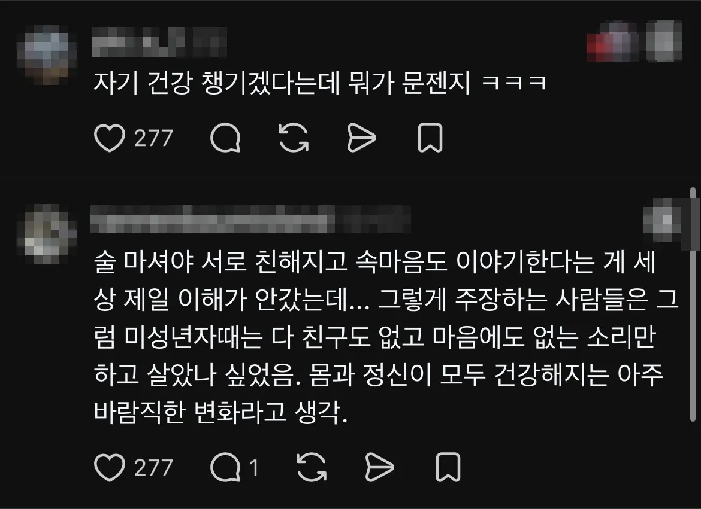

개젖두는 말했다
술은 백해무익하다고

개젖두는 말했다
술은 백해무익하다고
회사 회식도 그지같음 50대들은 언제 술 끊을래
코로나 이후로 술사주던 문화가 끊겨서 그럼
강남 소주 한병 6000원인데 먹고 싶겠냐
부어라 마셔라는 이제 끝내야지 안힘드냐?
맛대가리없는 소주 주제에 도수 15도 하는것도 맘에 안들고 거기다 5천원 애미없는 가격에 금주를 결정함
술 뭔맛으로 먹음?
맥주는 그래도 시원한 느낌이라도 있다지만 그 쓴걸 논 주고 왜 마심?
소주가 달다고? 병원가봐 병신아 미각 문제있어
인류 전체가 술에 미쳐있는 시간이 훨긴데 병신임 소리 처하고있네.
술이 미쳐있는 인간들보고 병신이라고 했냐?
술이 달다는 인간들이 병신이라고 했지?
이거 진짜 능지문제 오지네
전체적으로 글에서 걍 술마시는 사람 자체를 병신 취급하는 투로 적어놓고선
능지문제 이 ㅈㄹ하고 있네ㅋㅋㅋ
딱봐도 술이란곤 맥주 소주만 먹어본 새끼같은데
너가 술먹기 싫으면 안먹는거지 왜 그딴걸 왜 먹음 하면서 디스하는건 뭐냐??
글고 소주가 단새끼가 있을수도 있지 ㅂㅅ아
너가 뭔데 소주가 달고 맛난다는 새끼한티 병신 소리처하는거임??
글고 ㅂㅅ새끼야 삼계탕 먹고 시원하다고 하는게 진짜 시원해서 하는소리냐??
소주가 달다도 그런 뜻일텐데
넌 진짜 ㅂㅅ이다
전형적인 지성을 뽐내고 싶지만 딱히 지능이 전반적으로 높지는 않은 찐따말투네
실제로 사카린이 잔뜩 들어가서 달답니다
커피도 처음 마시면 개 쓰기만 하지만 마시다보면 원두의 맛을 느낄 수 있는 거랑 비슷하죠
걍 익숙하지 않은 맛이라 다른 맛을 못 느낄 쁜
너가 이니시 걸었잖아 ㅋㅋㅋㅋ
근데 쫄튀인가
감미료를 넣어서 단맛나는게 정상임
소주가 안달다고 하는 쪽이 병원가야 하는것
소주는 감미료 넣어서 진짜로 달다는거임;
소주는 단맛나는 재료를 넣는데요 병신임?
쓴맛이 단맛을 덮어버려서 쓴맛이 안나는데요?
기껏 생각해낸 게 그거니
소주는 여러 맛 중 단맛이 나게끔 난다긴다는 석박사들이 연구해서 만든건데 병신이라는 소리하고 자빠졌네 ㅋㅋ 니가 술 못쳐먹어서 쓴 것을 니 혓바닥에 지랄해야지 남들 병신 취급하는 능지는 뭐임? ㅋ
사회생활 때문에 마시는건 있지만 나도 요즘 잘 안 마셔 가끔 센치해져서 마시는건 있지만 ㅋㅋㅋ 누가 마시자 하면 그냥 가서 어울릴뿐 마시진않음
개인주의가 더 심화되어서 그런 것 같다.. 속을 터놓고(좋은 거든 안 좋은 거든) 대화할 필요 자체를 못느끼는듯
그돈주도 마시기 아까워 맛도없는데
20대때 질릴만큼 즐겨 그래야 40대에 깨끗하게 포기할수 있어
코시국 이후에 바뀐 문화인 거 같음
술을 안마셔도 할게 많으니깐 술을 안마시게됨 차를 좋아하니깐 또 대리기사가 차 함부로 대하는게 보기싫고
내가 20 30대때 체감했던 술자리비용(술+안주값)에 비해 너무 비싸져서 돈없어서 안먹는다는 말은 충분히 이해감...나부터도 3차이상은 이제 가고싶지도 않은데다 택시비도 개같이 비싸져서 하루 총 음주비용이 진짜 몇배는 되는거같음
건강이니 뭐니 그런거 다 상관없어. 젊은 20대가 건강 관리하는 사람이 어딨니.
코로나 전에는 놀려면 술을 먹어야 했고
지금은 안먹고도 놀게 많으니 그렇지.
대신 전자는 사람들과 어울리고 밖으로 나와서 경제가 돌지만 도태되는 사람이 생기고
후자는 개인의 건강과 돈을 지킬수 있지만 개인 주의가 심해져 경기가 안돌고.
과거엔 집단주의가 강하고 주된 스트레스 해소창구가 술인 시대인데 지금은 다 아니잖아
그리고 싸구려 소주주제 가격이 선을 넘음
요새 신입 남자애들보면 거진 운동하고 몸 다 좋음.
술 잘 안먹음
문화가 바뀌어서그런듯